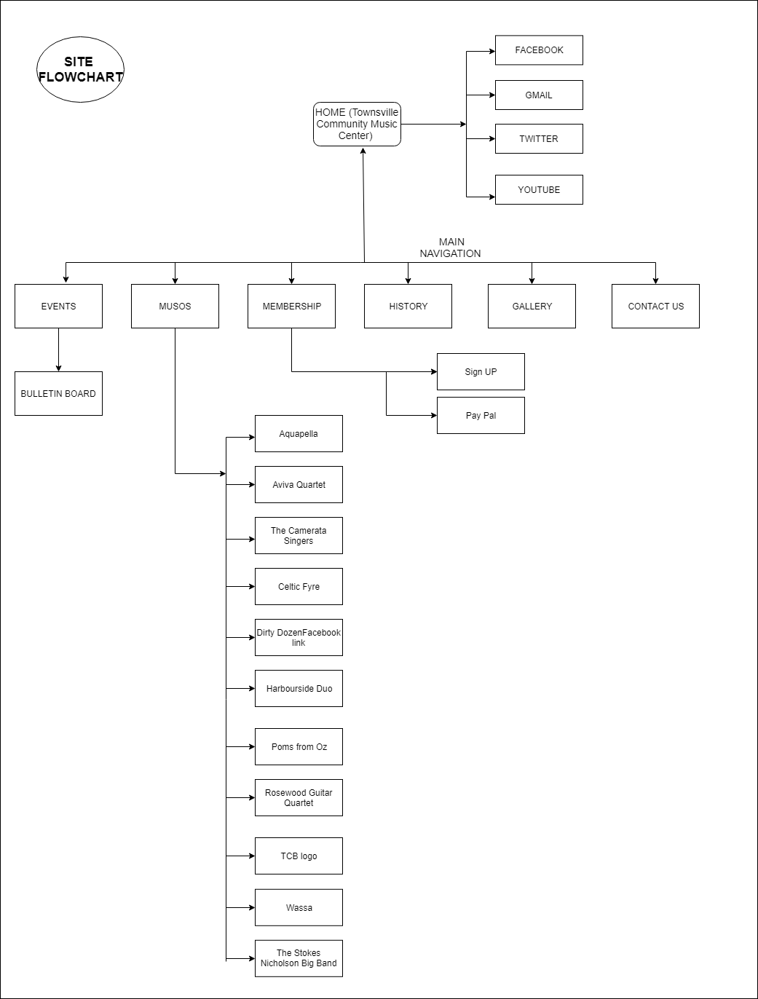

Name: PRAJWAL KHANAL ...
Login: JC497668 ...
The website is intended to increase the numbers of recruitments for Townsville Community Music Centre and engage the new members in various activities like volunteering for administration, organising and promoting concerts and workshops.The website should act as a marketting tool and significantly increase ticket sales especially among the general public and encourage performers to let Music center organize concert for them. Moreover, encouraging them to cooperate with promotion, photo shoots, media releases, etc.
The Success of the wesite would be evaluated from following points.
1) The increase in the number of members through the website.
2) Increase in the number of new members participating in various events.
3) Increase in the number of ticket sales.
4) Increase in the number of requests for organizing events or concerts
5) High anticipation of the performers in promotion, photo shoots and media releases.
The website is intended to look appealing to people following wide range of styles and genres therefore includes wide range of ages and tastes. However, involvement of children is predominated by their parents or the family members.
The content of this page gives you a general idea of Townsville Community Music Center and information about Townsville.
Here all the events are displayed and sorted by date. Also, artist's page is linked if that particular astist has event featured. Bulletin Board and the notices are also in this page since events and notices are similar and can be placed in the same page for more clear information.
All the artist are listed and link to the artists' particular page with more details and large pictures are provided.
The content of this page describes the registration and membership benefits allowing user to sign up online. Link to pay pal is also provided
History about this music center is briefly described and related information are provided.
Pictures of different events,conecerts, artist and related images for this music center are shown in the gallery.
 ...